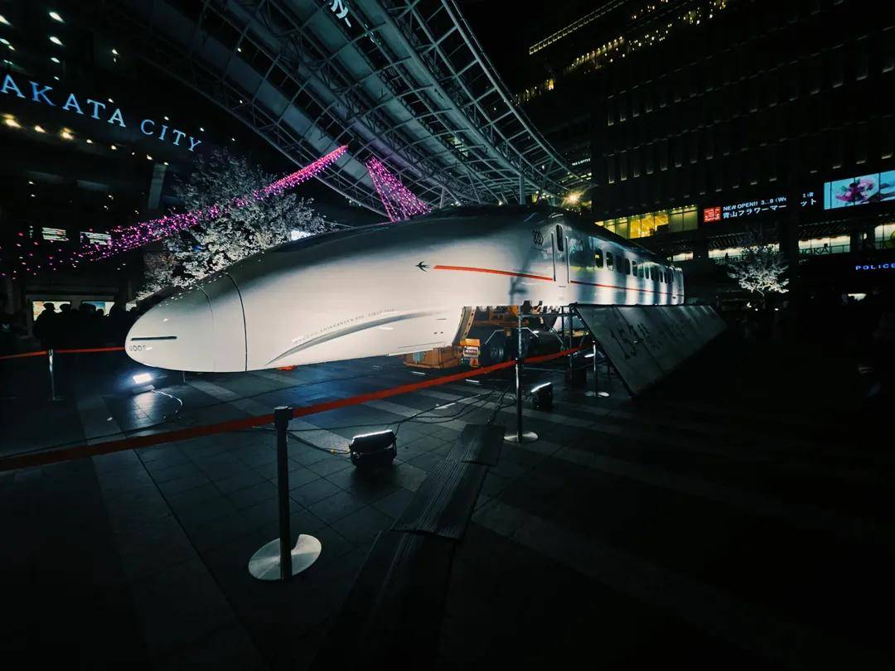
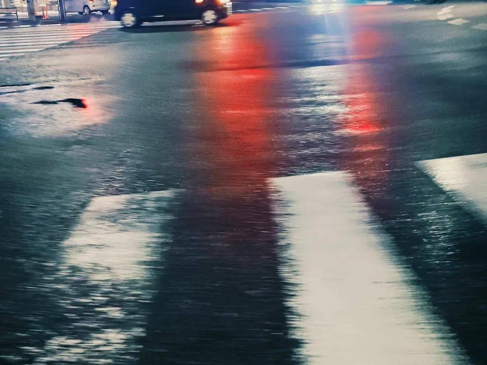
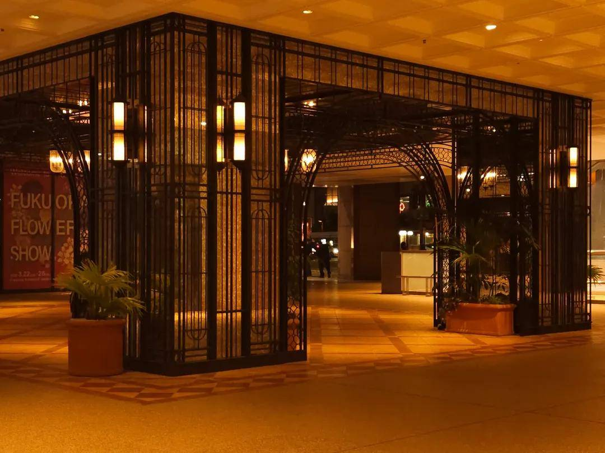
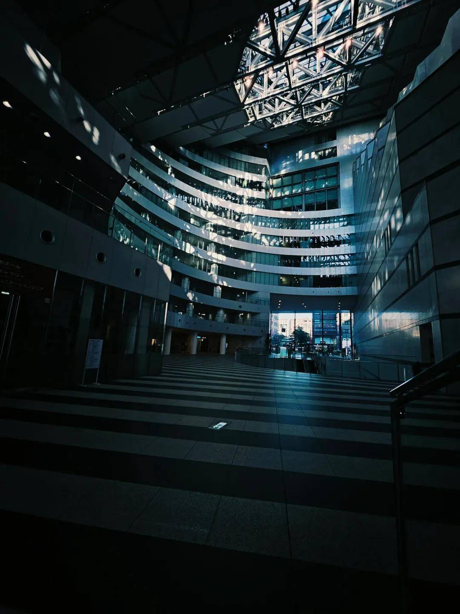
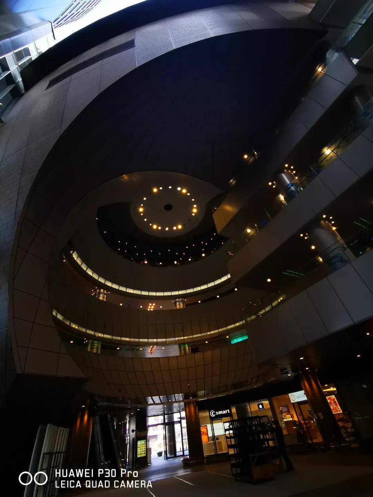
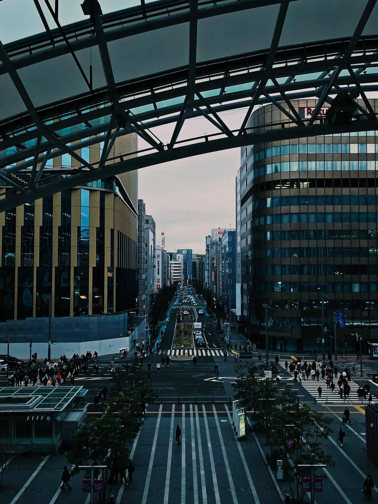

Silence, Light, and Moments.






A Leica is always in my hands. Every time I release the shutter of this quiet, profound camera, I feel as though I am discovering a new sense of distance between myself and the world.
I often ponder the difference between painting and taking photographs. Painting is an act of addition; it is the process of building a world from zero by adding what is born from within your mind onto a blank white canvas. Photography, however, is the exact opposite. I perceive it as an act of subtraction from the complex world that already exists before our eyes. It is the sensation of stripping away the unnecessary through the lens, scooping up only the "fragments of truth" hidden beneath.
What I search for through the viewfinder is not an imposition of excessive emotion or forced narratives. I seek to capture moments that are breathtakingly still, inorganic, and filled with a sense of transparency. I believe that a pure, honest beauty resides precisely within cold scenery that seems to carry no body heat.
I would be delighted if you could feel the transparent silence—as if time has stood still—within the gradations of light and shadow captured by my Leica.